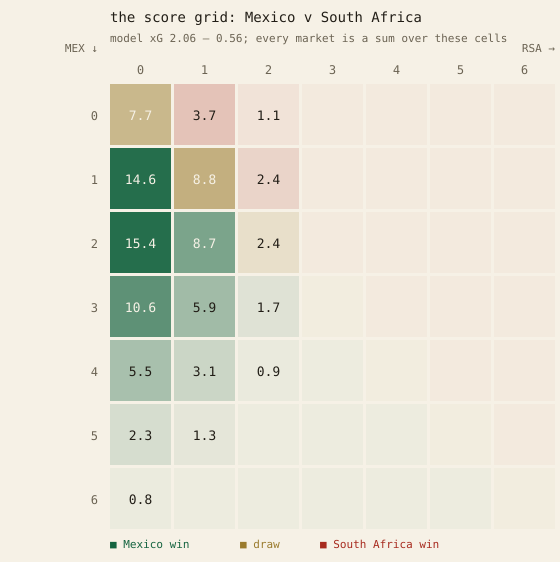
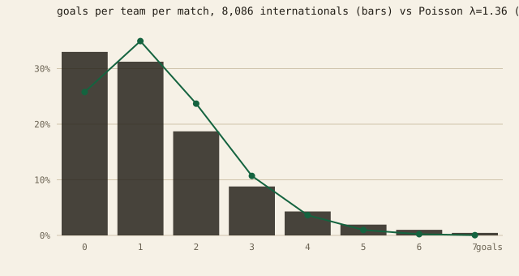
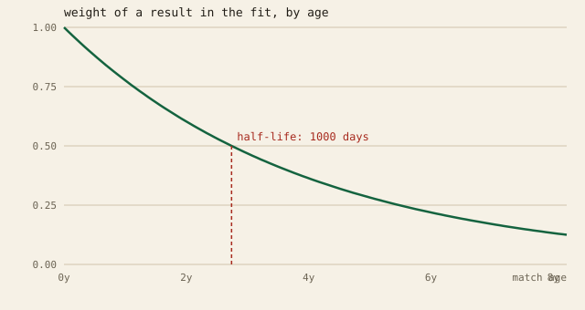
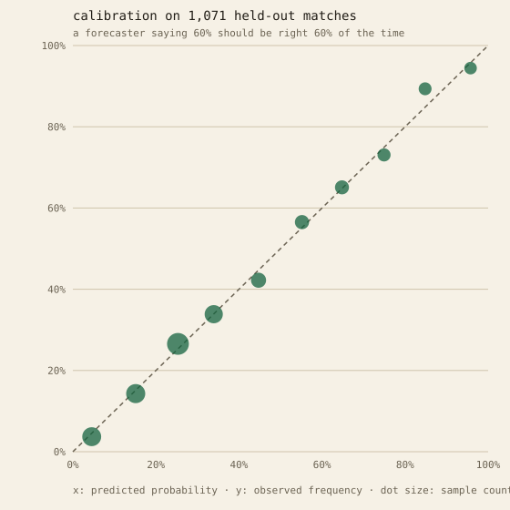

اعداد چگونه ساخته میشوند
همهٔ آنچه در این سایت میبینید با کدِ باز و دادههای عمومی ساخته شده است؛ نه نتیجهای که دستی انتخاب شده باشد و نه حاصل حدس و گمان. کد کامل پروژه روی گیتهاب در دسترس است. این صفحه فقط توضیح میدهد که این اعداد از کجا میآیند و پشت صحنهٔ آنها چه میگذرد.
دادهها
سه منبع داده داریم. مهمترین آنها مجموعهٔ متنباز martj42 است که ۴۹٬۴۵۰ بازی ملی از سال ۱۸۷۲ را در بر میگیرد. مدل روی ۸٬۰۸۱ بازیِ برگزارشده از سال ۲۰۱۸ به بعد آموزش میبیند. فرم فعلی تیمها و برنامهٔ مسابقات از API-Football میآیند و قیمتهای لحظهای بازار از API عمومی پالیمارکت دریافت میشوند.
دادههای آموزشی پیش از استفاده با منابع اصلی تطبیق داده شدند. در این فرایند چهار نتیجهٔ اشتباه پیدا شد و اصلاح شد. فایل این اصلاحات نیز در مخزن پروژه موجود است.
مدل بازی
هستهٔ سیستم یک مدل پواسونِ وزندار دیکسون–کولز است؛ همان مدلی که سالهاست در صنعت شرطبندی و پیشبینی فوتبال استفاده میشود.
برای هر تیم دو عدد تخمین زده میشود: قدرت حمله و قدرت دفاع. این اعداد از روی کیفیت حریفان و تعداد گلهایی که تیم مقابل آنها زده یا خورده به دست میآیند. بازیهای جدیدتر اهمیت بیشتری دارند (نیمهعمر ۱۰۰۰ روز)، مسابقات دوستانه وزن کمتری میگیرند (×۰٫۸)، و تیمهایی که دادهٔ کمی دارند بیش از حد از میانگین دور نمیشوند.
همچنین یک اصلاح برای نتایج کمگل (ρ=−۰٫۰۵) در نظر گرفته میشود، چون فوتبال واقعی بیشتر از چیزی که دو پواسون مستقل پیشبینی میکنند به نتایجی مثل ۰-۰ و ۱-۱ ختم میشود. تیمهای میزبان نیز زمانی که در کشور خودشان بازی میکنند از مزیت زمین خانگی بهره میبرند که تقریباً معادل ۳۰ درصد افزایش در نرخ گلزنی است.
از روی دو مقدار «گل انتظاری»، مدل شبکهٔ کامل احتمال تمام نتایج ممکن را میسازد. تمام بازارهای هر مسابقه مستقیماً از همین شبکه محاسبه میشوند و در این مرحله هیچ شبیهسازیای انجام نمیشود.

ابرپارامترها بهصورت دستی انتخاب نشدهاند. آنها با اعتبارسنجی متقابل روی چهار پنجرهٔ غلتان ۱۲ ماهه و ۴٬۲۲۸ بازی خارج از نمونه انتخاب شدهاند. لگلاس اعتبارسنجی ۰٫۸۹۱۲۷ بود، در حالی که حدسِ همیشگی بر اساس نرخ پایه به ۱٫۰۴۶ میرسید (عدد کمتر بهتر است). دو ایده نیز در آزمایشها رد شدند: سقفگذاری روی بردهای پرگل و استفاده از حافظهٔ کوتاهتر.
ترکیب با بازار
برای پیشبینی مسابقات مرحلهٔ گروهی، احتمالهای مدل با قیمتهای لحظهای پالیمارکت ترکیب میشوند (میانگینگیری لگاریتمی با وزن ۳۵ درصد برای بازار).
دلیل این کار ساده است: بازار معمولاً ساعتها زودتر از آنکه نتایج و دادههای گل اثرشان را نشان دهند، از ترکیب تیمها، مصدومیتها و اخبار باخبر میشود. در عین حال نسخهٔ خام مدل نیز جداگانه نگه داشته میشود تا بتوان اختلاف آن با بازار را بررسی کرد و فرصتهای ارزشگذاری را پیدا کرد.
عملکرد مدل، بازار و نسخهٔ ترکیبی نیز بهصورت جداگانه و با نتایج واقعی در کارنامه سنجیده میشود.
شبیهسازی تورنمنت
در هر اجرا، ۱۰۰٬۰۰۰ تورنمنت کامل ــ معادل حدود ۱۰ میلیون مسابقهٔ شبیهسازیشده ــ روی براکت رسمی فیفا اجرا میشود. این شبیهسازی قالب دور ۳۲ تیمی و تمام محدودیتهای مربوط به جایگذاری تیمهای سوم را نیز در نظر میگیرد.
هر تورنمنتِ شبیهسازیشده یکی از ۲۰۰ مدلِ بازنمونهگیریشده (Bootstrap) را انتخاب میکند تا عدمقطعیت پارامترها نیز در احتمالها منعکس شود. علاوه بر این، چند منبع تصادفی با میانگین صفر وارد شبیهسازی میشوند: تغییر فرم تیمها در طول تورنمنت (مصدومیت، هماهنگی و عوامل مشابه ــ σ=۰٫۰۶)، فرسایش مراحل حذفی (۱۰ درصد احتمال آسیب ماندگار در هر مسابقهٔ حذفی) و جریمهٔ خستگی پس از بازیهای ۱۲۰ دقیقهای.
هیچکدام از این عوامل در میانگین به نفع تیم خاصی نیستند؛ اما در عمل معمولاً کمی به سود تیمهای کوچکتر تمام میشوند، چون اتفاقات غیرمنتظره معمولاً بخشی از برتری مدعیان را از بین میبرند.
کمی علم: مفاهیم و اصطلاحها
چرا پواسون؟
گل یک رخداد نسبتاً کمیاب است: بهطور متوسط حدود ۲٫۷ گل در هر ۹۰ دقیقه و در هر دقیقه با احتمالی کوچک و تقریباً مستقل.
شمارش چنین رخدادهایی به توزیع پواسون منجر میشود. در این توزیع، یک عدد یعنی نرخ λ («گل انتظاری») برای تعیین کامل احتمال ۰، ۱، ۲ و تعداد بیشتری گل کافی است. در نتیجه کل مسئله به تخمین دو نرخ برای هر مسابقه تقلیل پیدا میکند؛ نرخهایی که از یک مدل لگ-خطی به دست میآیند:
لگاریتم نرخ = پایه + قدرت حملهٔ تیم + ضعف دفاع حریف (+ مزیت میزبانی)

تصحیح دیکسون–کولز
دو پواسون مستقل در یک بخش مهم از واقعیت دچار خطا میشوند. فوتبال واقعی بیشتر از چیزی که استقلال آماری پیشبینی میکند نتایج ۰-۰ و ۱-۱ تولید میکند، چون تیمها گاهی بازی را کنترل میکنند و ریسک را کاهش میدهند.
دیکسون و کولز در سال ۱۹۹۷ دقیقاً همین بخش کمگل جدول احتمالات را با یک پارامتر همبستگی ρ اصلاح کردند. با وجود گذشت نزدیک به سه دهه، این خانواده از مدلها هنوز یکی از پایههای اصلی محاسبهٔ ضرایب حرفهای فوتبال است.
برازش: درستنمایی بیشینهٔ وزندار
درستنمایی بیشینه به این سؤال پاسخ میدهد: چه مجموعهای از پارامترها نتایج مشاهدهشده را کمترین میزان غافلگیرکننده میکند؟
هر مسابقه با وزن خاص خود وارد مدل میشود: افت زمانی نمایی (هر نتیجه پس از ۱٬۰۰۰ روز نیمی از اثر خود را از دست میدهد) و ضریب ×۰٫۸ برای مسابقات دوستانه.

انقباض (Shrinkage) نیز برای هر تیم چند مسابقهٔ خیالیِ «متوسط» اضافه میکند تا تیمهایی که دادهٔ کمی دارند بیش از حد از میانگین فاصله نگیرند. این همان مصالحهٔ کلاسیک بین اریب و واریانس است: یک برآورد کمی اریب معمولاً از یک برآورد پرنوسان بهتر عمل میکند.
اعتبارسنجی صادقانه و قواعد نمرهدهی
مدلی که روی دادههای آموزشی خودش ارزیابی شود، در واقع دارد خودش را فریب میدهد.
به همین دلیل ارزیابی خارج از نمونه (اعتبارسنجی متقابل) انجام میشود: تا یک تاریخ مشخص مدل برازش میشود، ۱۲ ماه بعد پیشبینی میکند و این فرایند روی چهار پنجره تکرار میشود.
کیفیت پیشبینیها با قواعد نمرهدهی سَره سنجیده میشود؛ یعنی معیارهایی که فقط در صورت بیان صادقانهٔ باور واقعی بهینه میشوند. لگلاس (منفی لگاریتم احتمالی که به رخداد واقعی داده شده) با پیشبینیهای بیشازحد مطمئن بسیار سختگیرانه برخورد میکند. نمرهٔ برایر نیز میانگین مربع خطای احتمالها را اندازه میگیرد.
درصد «پیشبینی درست» یک معیار سَره نیست، چون با انتخاب همیشگی فاوریت میتوان آن را دستکاری کرد. به همین دلیل کارنامهٔ مدل با برایر و لگلاس شروع میشود.

مونتکارلو و قانون اعداد بزرگ
برای یک تورنمنت راهحل بسته و فرمولی وجود ندارد. قوانین تساوی گروهها، جایگذاری تیمهای سوم و مسیر براکت بیش از حد پیچیده و درهمتنیدهاند.
روش مونتکارلو این مشکل را دور میزند: کل تورنمنت را ۱۰۰٬۰۰۰ بار شبیهسازی کن و نتایج را بشمار.
قانون اعداد بزرگ تضمین میکند که این شمارشها به احتمال واقعی مدل همگرا شوند. خطای استاندارد برآورد شانس قهرمانی در این مقیاس حدود ±۰٫۱۲ واحد درصد است و در عمل نیز تأیید شده است: دو اجرای مستقل برای همهٔ مدعیان کمتر از ۰٫۲ واحد درصد اختلاف داشتند.
بوتاسترپ: دانستنِ آنچه نمیدانیم
یک مدلِ برازششده ممکن است این تصور را ایجاد کند که پارامترهایش دقیق و قطعیاند. در واقع اینطور نیست؛ این پارامترها فقط برآوردهایی هستند که از دادهای محدود به دست آمدهاند.
بوتاسترپ دقیقاً برای اندازهگیری همین عدمقطعیت به کار میرود: وزن مسابقات بهصورت تصادفی تغییر میکند، مدل دوباره برازش میشود و این فرایند ۲۰۰ بار تکرار میشود.
پراکندگی این ۲۰۰ مدل همان عدمقطعیت پارامترهاست و هر تورنمنتِ شبیهسازیشده یکی از آنها را انتخاب میکند. نتیجه این است که بخشی از اعتمادبهنفس بیشازحد مدعیان حذف میشود و احتمالها واقعبینانهتر میشوند.
ترکیب پیشبینیگرها: میانگین لگاریتمی
مدل و بازار اطلاعات متفاوتی دارند. یکی تاریخچهٔ گلها را میبیند و دیگری ترکیبها، مصدومیتها و اخبار را.
میانگین لگاریتمی احتمالها ــ یعنی ضرب احتمالها با توانهای وزنی و سپس نرمالسازی ــ روش استاندارد ترکیب این منابع اطلاعاتی است.
وزن ۰٫۳۵ برای بازار نیز یک انتخاب شفاف و آزمونپذیر است. عملکرد هر سه نسخه ــ مدل، بازار و ترکیب ــ جداگانه ثبت میشود تا خود دادهها نشان دهند این وزن انتخاب مناسبی بوده است یا نه.
پاسخگویی
براکت کامل ــ شامل هر ۷۲ مسابقهٔ مرحلهٔ گروهی و تمام مراحل حذفی تا تعیین قهرمان ــ پیش از آغاز تورنمنت قفل میشود و با ثبت نتایج واقعی بهصورت عمومی در کارنامه ارزیابی میشود.
هر اجرای محاسبات با مهر زمانی آرشیو میشود و نسخههای روزانهٔ سایت در بخش نسخههای قبلی منجمد باقی میمانند.
پیشبینیای که بتوان آن را بعداً تغییر داد، پیشبینی نیست.
نقاط کور شناختهشده
ترکیب بازیکنان، مصدومیتها و محرومیتها مستقیماً در مدل حضور ندارند؛ این اطلاعات از طریق بازار وارد میشوند. آبوهوا و ارتفاع زمین ضریب مستقلی ندارند، چون با دادههای موجود قابل برآورد نیستند و فقط بهعنوان هشدار در نظر گرفته میشوند. شبیهسازی درونبازی انجام نمیشود و فقط نتیجهٔ نهایی مدلسازی میشود. اندازهٔ شوکهای تصادفی فرضهایی اعلامشده هستند، نه پارامترهایی که از داده برآورد شده باشند. همچنین انگیزهٔ تیمها در مسابقات کماهمیت هفتهٔ سوم مرحلهٔ گروهی با بازبینی دستی مدیریت میشود؛ تقریباً همان روشی که بسیاری از محاسبهگرهای حرفهای ضرایب از آن استفاده میکنند.
این مدل قرار نیست آینده را پیشگویی کند. هدفش ارائهٔ یک مبنای منصفانه و سازگار برای ارزشگذاری احتمالات است.